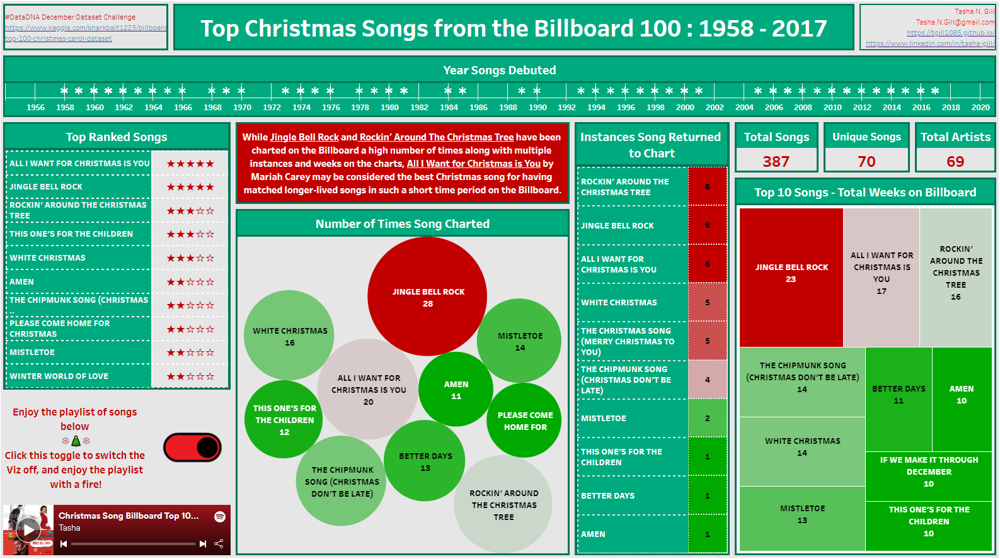
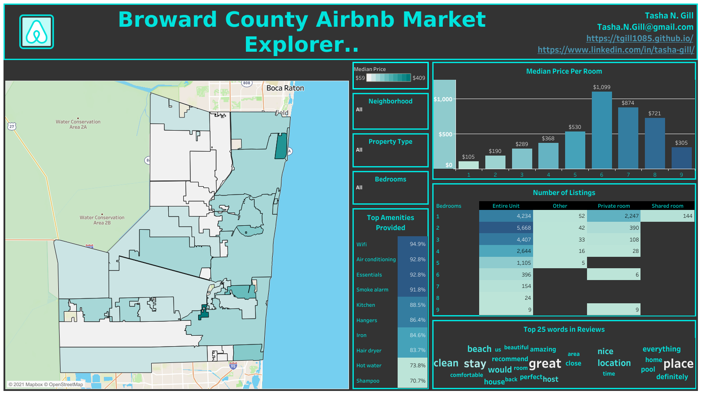
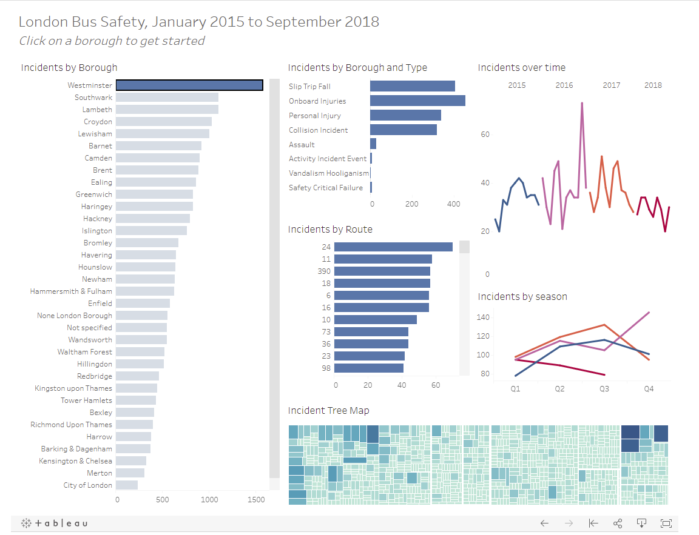
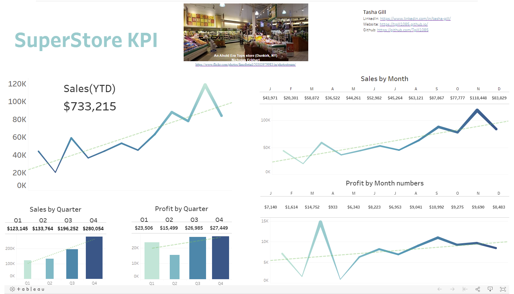
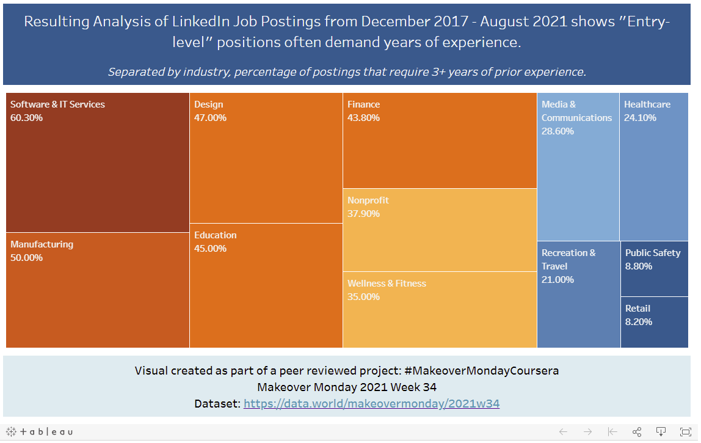

Tasha Gill
Data Analyst | Delivering Actionable Insights Through Data Analysis & Visualization
Other links:
About Me
Data Analyst with hands-on experience in exploratory data analysis, cleaning, visualization, and storytelling using SQL, Python, R, and BI tools like Tableau and Power BI.
My journey started in 2021 with the Google Data Analytics Professional Certificate, where I built foundational skills in data processing, analysis, and presentation. I've continued growing through certifications in SQL for Data Science, Data Analysis with Python (freeCodeCamp), and a Udacity Data Analyst Nanodegree (completed 2024). In early 2026, I actively participated in MLZoomCamp2025 to strengthen predictive modeling capabilities.
I'm passionate about using data to uncover trends, identify opportunities, and support better decision-making. Open to roles where analytical skills can contribute to meaningful outcomes.
Skills
Analytical & Business-Relevant Skills
- Exploratory Data Analysis
- Data Cleaning & Wrangling
- Data Visualization & Storytelling
- Data-Driven Insights & Recommendations
- Process & Trend Identification
- Problem Solving
- Communication & Stakeholder Focus
- Data Ethics
Technical Tools
- SQL
- Python (Pandas, NumPy, Matplotlib, Seaborn)
- R (tidyverse, dplyr)
- Tableau, Power BI
- Google BigQuery, Jupyter Notebooks, RStudio
- Microsoft Excel (Advanced)
- Project Management: Asana, Trello
Certifications (Links below)
- Data Analyst Nanodegree, Udacity (November 2024, Credential ID: 141b9374-f5c4-11ee-bbfe-2bc8e12468ce)
- Google Data Analytics Specialization, Coursera (July 2021, Credential ID: ZU5PASHXS62P)
- SQL for Data Science, Coursera (August 2021, Credential ID: YAMKW2CBWG6J)
- Data Analysis with Python, freeCodeCamp (September 2021)
- Intro to Machine Learning, Kaggle (August 2021)
Get in Touch - Email Contact Form
Feel free to reach out about data opportunities or collaborations!
Projects
Highlighted Projects from 2021 to 2026, demonstrating machine learning, data analysis, visualization, Tableau/BI dashboards, and Python/R skills.
Machine Learning
MLZoomCamp2025: Hardware-Based Steam Games Recommender (2026)
A machine learning-powered web app that recommends Steam games based on your PC hardware, helping users quickly determine if their computer can run specific games, without invasive scans, downloads, or extensive research across the Steam Store.
The project addresses real-world challenges like hardware pricing crises, inconsistent performance data, and time-consuming compatibility checks by combining Steam game data, hardware benchmarks, fuzzy matching, and a trained Random Forest model to predict compatibility.

Key Skills Demonstrated
- Data cleaning and processing of inconsistent datasets with Pandas
- Feature engineering including fuzzy matching and scoring
- Machine learning modeling (Random Forest classification)
- Synthetic data generation for balanced training
- End-to-end ML pipeline development and deployment
- Interactive web app creation with Streamlit
- Model management and version-controlled deployment
- Transforming complex data into user-friendly recommendations
Live Demo: Try the Recommender App
Repository: View Full Project on GitHub
Data Analysis: BI Tools
OnyxData #Datadna December Challenge: Billboard's Top 100 Christmas Songs 1958–2017 (December 2021)

Analyzed Billboard Christmas songs dataset to determine the "greatest" holiday track. Created an interactive viz with seasonal insights and fun elements (toggle to fire-side view).
Key Skills Demonstrated
- Tableau dashboard creation and interactivity
- Data storytelling with seasonal/time-based trends
- Creative visualization design (custom elements like fire-side toggle)
- Public sharing and challenge participation
DataXP.AI Airbnb Market Dashboard (December 2021)

Built a dashboard to help property owners/investors understand Airbnb markets: average prices, bedroom distributions, amenity proportions (pools, AC, etc.), and high-level overviews.
Key Skills Demonstrated
- Tableau dashboard design for stakeholder insights
- Python preprocessing (Pandas, NumPy, DataPrep, NLTK for text/amenities)
- Property attribute analysis and proportional visualizations
- Business-oriented market summary creation
London Bus Safety Performance Dashboard (November 2021)

Interactive Tableau dashboard with borough filters showing safety metrics and trends from London bus incident data.
Key Skills Demonstrated
- Filter-based interactive dashboards in Tableau
- Spatial/location data visualization
- Functional and clean design for practical use
SuperStore KPI & Charts Dashboard (November 2021)

Expanded guided project into a colorful KPI board with enhanced visuals beyond basic numbers, using Tableau Sample - Superstore data.
Key Skills Demonstrated
- Custom KPI dashboard development in Tableau
- Creative color and layout choices for engagement
- Combining metrics with supporting charts
Makeover Monday 2021 Week 34: Entry-Level Job Requirements Viz (November 2021)

Improved visualization from Makeover Monday challenge on the paradox of entry-level positions requiring years of experience.
Key Skills Demonstrated
- Tableau viz redesign and improvement
- Critical analysis of existing charts
- Clear communication of counterintuitive data insights
Hotel Revenue & Parking Trends Dashboard (November 2021)

Created SQL database from cleaned Excel data (SSMS), queried into Power BI, and built dashboard answering revenue growth by hotel type, parking demand trends, and seasonality in ADR/guests.
Key Skills Demonstrated
- Database creation and querying in SSMS/SQL
- Power BI dashboard development and data import
- Business question-driven visualization (growth, trends, seasonality)
- End-to-end ETL from Excel to interactive dashboard
Data Analysis: Python / R
FreeCodeCamp Data Analysis with Python: Sales Data Analysis (2021)
Performed EDA on sales datasets to detect trends, seasonality, and key drivers, highlighting potential areas for performance improvement.

Key Skills Demonstrated
- Exploratory data analysis and trend detection
- Data cleaning and preprocessing
- Visualization of time-series and categorical insights
- Identification of seasonality and performance drivers
- Generating actionable business recommendations from data
Interactive Notebook: View & Run on Kaggle | View Rendered Notebook on GitHub
Kaggle EDA with Python: Medical Data Visualizer (2021)
Visualized health-related metrics using Python libraries to reveal patterns and support data-informed analysis in health contexts.


Key Skills Demonstrated
- Data visualization with Python (Matplotlib/Seaborn)
- Creating categorical plots and correlation heatmaps
- Pattern discovery in health-related datasets
- Effective communication of complex relationships through visuals
Google Data Analytics Capstone: Bellabeat Case Study (July 2021)
Analyzed Fitbit user data to explore activity, sleep, and health patterns; delivered visualizations and recommendations to support product strategy and user engagement.
Key Skills Demonstrated
- End-to-end data analysis process
- Data cleaning and preparation
- Exploratory analysis and visualization (R / tidyverse / ggplot2)
- Insight generation and strategic recommendations
- Data storytelling through presentations